Theory
Theory
This section gives a brief introduction to Fourier Series
representation of signals as relevant to the Fourier Series demo. Towards the
end, Fourier series representation for those signals used in the tool are
derived as examples.
What is Fourier series representation and why do we need it ?
The analysis of LTI (Linear Time Invariant) systems can be made easier if we can
represent different signals using some basic set of signals. Fourier Series is
one kind of representation of signals, where we use complex exponentials. These
basic signals can be used to construct more useful class of signals using
Fourier Series representation. Fourier Series can be used to represent both
continuous and discrete Periodic signals.
Fourier Series representation of Continuous time periodic signal
There are two well known basic periodic signals, the sinusoidal signal
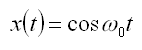
and complex exponential signal given as,
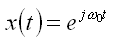
These are periodic with fundamental frequency w0 and fundamental period T = 2p/w0. These
signals are called periodic since x(t) = x(t+T)
Associated with this signal are other harmonic complex exponentials, given as
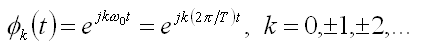
They have fundamental frequencies, that are multiple of w0 and with period equal
to T or a fraction of T. A linear combination of these harmonic signals as given
below, is also periodic with period T.
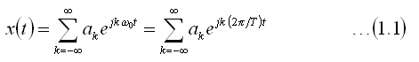
The representation of a periodic signal as sum of harmonically related complex
exponentials is referred to as the Fourier Series representation. Here the
Fourier Series has been expressed in an exponential form. This
expression can be modified for real-periodic signals, using the fact that
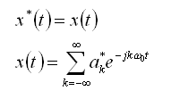
For real signals we have,
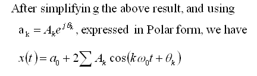
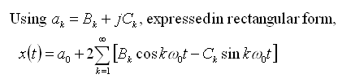
The above expressions are common forms of Fourier Series representation for
real-periodic signals. Here they have been expressed in Trignometric form.
Fourier Series coefficients
If a periodic signal can be represented in the form shown in
Eqn(1.1), then we need to have a way to determine the coefficients
ak. These are called the Fourier coefficients. The steps in
deriving the equation to determine the coefficients are shown below.
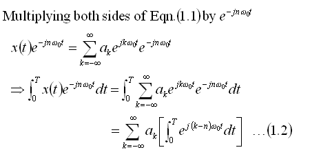
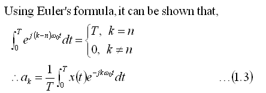
This equation can be used to determine the Fourier Series coefficients in the
Fourier Series representation of a periodic signal.
In summary, the Fourier Series for a periodic continuous-time
signal can be described using the two equations
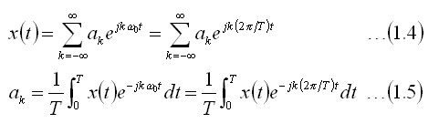
The next section, deals with derivation of the Fourier Series coefficients for
some commonly used signals. Especially, it includes those signals that are used
in the Fourier Series demo.
Examples
This section shows the steps in deriving the Fourier series coefficients for the
signals used in the Fourier Series demo. While the first case has detailed
steps, for the rest few intermediate steps and the final form is provided. Now
lets look at the different type of signals.
Square wave
Here we consider the original signal to be a periodic continuous Square wave and
derive its Fourier Series coefficients. The steps involved are as shown
below. We start with the functional form of the original square wave,
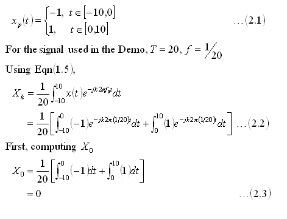
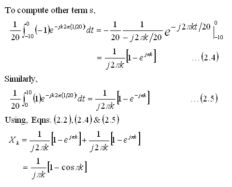
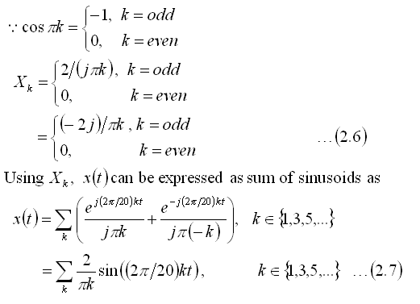
Comments:
From the result in Eqn(2.7), we see that the Fourier Series of
square wave consists of sine terms only. This is as expected, because both the
square and sine wave are odd functions, i.e.,
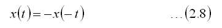
From the plots shown below, since we used only a limited number of terms
(i.e a truncated Fourier series), the approximation does not seem very accurate
at discontinuities of the square wave. With increasing number of coefficients,
the approximation improves, but the magnitude of overshoots does not decrease,
following Gibbs Phenomenon. For more details on this, please refer to standard
texts.
The magnitude and phase plots agree with the result we obtained
in Eqn(2.6). That is for non-zero for k < 0, Xk is
-p/2, while for k > 0, Xk is
p/2.
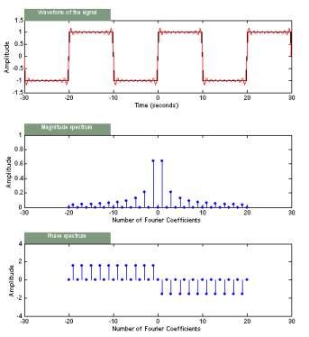
Triangle wave
Here we consider the original signal to be a periodic continuous Triangle wave
and derive its Fourier Series coefficients. The detailed steps are not shown
below. We start with the functional form of the original triangle wave,
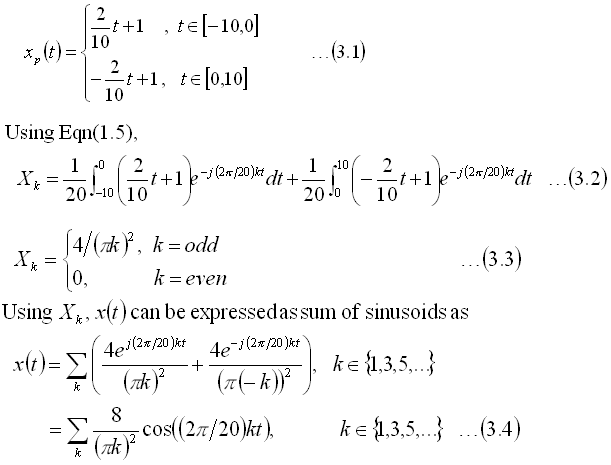
Comments:
From the result in Eqn(3.4) , we see that the Fourier Series form of the
Triangle wave consists of cosine terms only. This is as expected, since both the
triangle and cosine wave are even functions.i.e.,
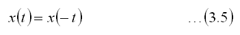
Further, the Fourier Series representation does not have any complex terms
and hence the phase is always zero.
Since the triangle wave does not have discontinuities as in the Square wave,
the reconstructed function is very smooth and almost overlaps the original
function. This can be seen from the figure below.
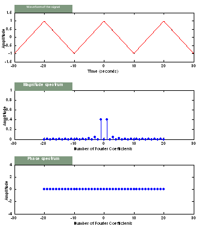
Ramp or Sawtooth wave
Here we consider the original signal to be a Ramp or sawtooth wave and look at
the steps involved in deriving its Fourier Series coefficients. We start with
the functional form of the ramp used in the demo,
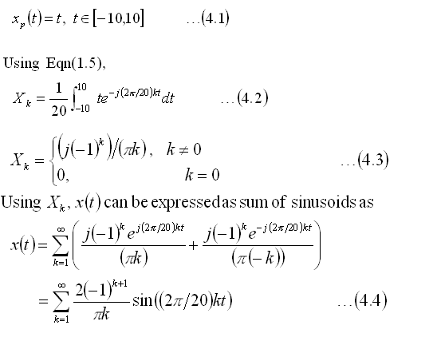
Comments:
From the result in Eqn(4.4), we see that the Fourier Series form consists of
sine terms only. This is as expected, since the original ramp and sine function
are both odd functions as in eqn. This is similar to the results obtained with
the Square wave.i.e., both the Square and Ramp we considered in the demo are odd
functions.
Again because of discontinuities in the original Ramp, the reconstructed
signal is not as smooth as that was reconstructed in the triangle wave.
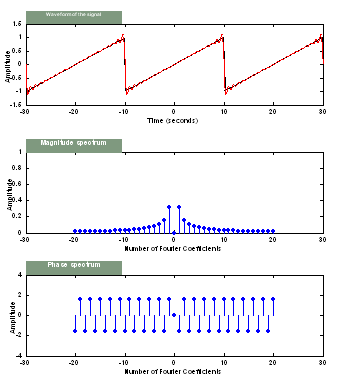
Full-wave
Here we consider the original signal to be a full-wave rectified sine wave and
look at the steps involved in deriving its Fourier Series coefficients. We start
with the functional form of the full-wave used in the demo,
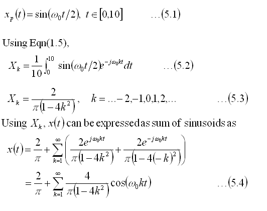
Comments:
From the result in Eqn(5.4), we see that the Fourier Series form of the
full-wave consists of cosine terms only. This is as expected, since both the
full-wave and cosine wave are even functions as in Eqn(3.5).
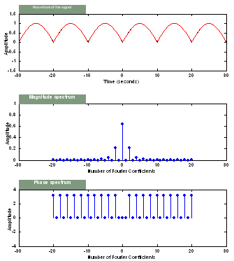
Half-wave
Here we consider the original signal to be a half-wave rectified sine wave and
look at the steps involved in deriving its Fourier Series coefficients. We start
with the functional form of the half-wave used in the demo,
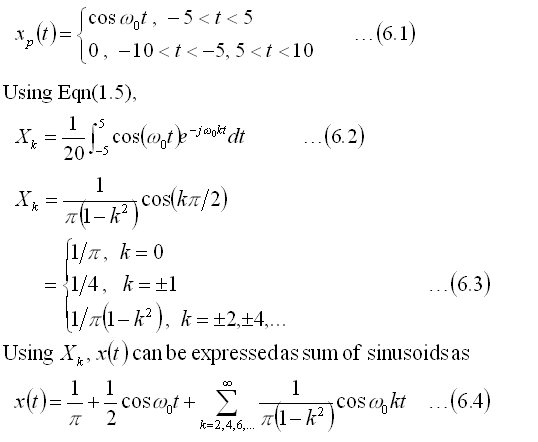
Comments:
From the result in Eqn(6.4) , we see that the Fourier Series form of the
half-wave consists of cosine terms only. This is as expected, since both the
half-wave and cosine wave are even functions as in Eqn(3.5).
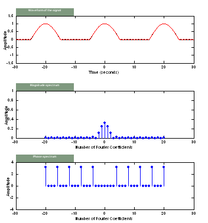
The results that have been derived here can be verified using the Fourier Series
GUI. Though the derivations have not been given in full detail, users can easily
derive the results from the starting equations given here.
Does it all make sense to you? If you are not sure go over it
one more time before moving on with the rest of the tutorial.
If you still do not get it, let us know what is confusing
you. We want to make this tutorial understandable and any feedback is
appreciated!